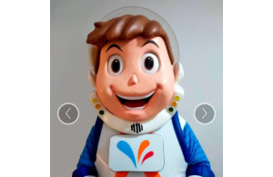

História do Mascote do Colégio Real
Provavelmente você sabe que o mascote, mantido pelo Colégio Real é o mais famoso da mata sul. Mas talvez você não saiba que o seu simpático mascote tem um nome e uma história muito curiosa? Pois acompanhe esse artigo para aprender muita coisa sobre esse robozinho.
A primeira versão
A primeira tentativa de criar um mascote surgiu em 2018 e veio do CEO do Colégio Real Bruno Amaral. Ele conta que chamou Julio (Seu TI a mais de 20 anos) e criou sua própria versão de robô. O objetivo era apenas trazer alegria para as crianças de sua escola, não existia nenhuma solicitação da empresa para a criação de um mascote.
Essa primeira versão bizarra até foi batizada em homenagem ao colégio: O Reizinho.
Surge um novo mascote
A ideia de ter um mascote foi amadurecendo e a missão foi passada para um profissional da área. O desing Palmarense Micaelson, também colaborador do Real, ficou com a missão de representar o pequeno rei de uma maneira mais agradável.
A ideia principal de Micaelson era representar inovação e realismo. O desenho também deveria gerar identificação rápida com quem o olha. Surgiu então o Reizinho Espacial.
A principal inspiração para os traços do novo Reizinho veio de astronautas. Conta a lenda que o artista sonhou com Ellon Musk quando estava criando.